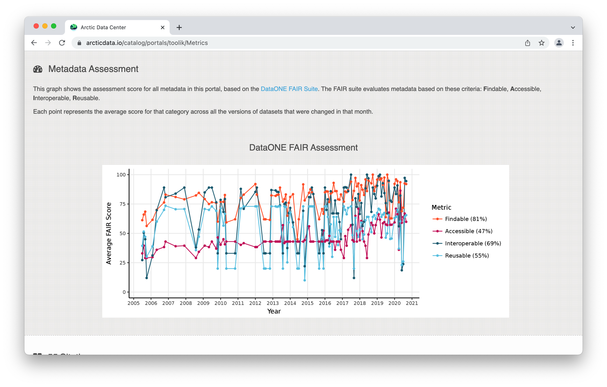
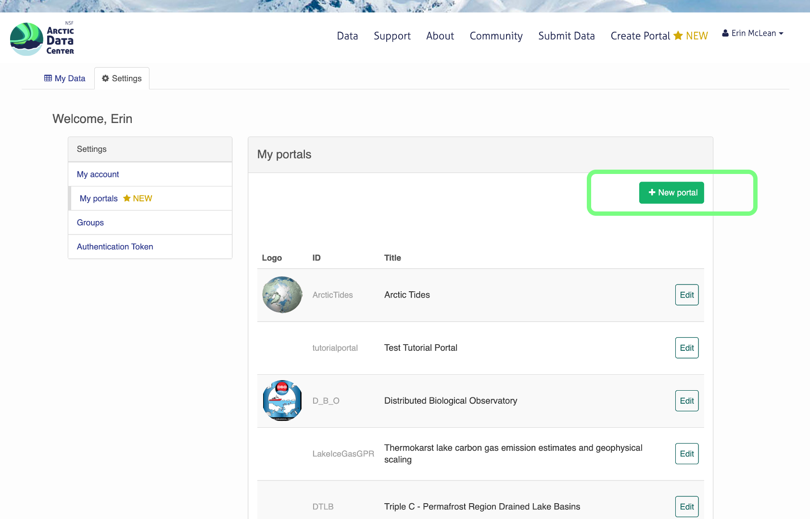
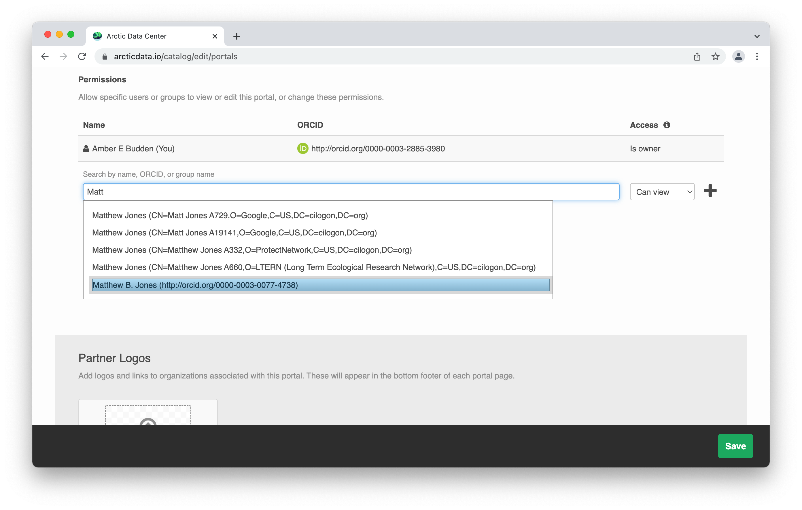

11 Data Portals
Data portals are a new feature on the Arctic Data Center. Researchers can now easily view project information and datasets all in one place.
11.1 What is a Portal?
A portal is a collection of Arctic Data Center data packages on a unique webpage.
Typically, a research project’s website won’t be maintained beyond the life of the project and all the information on the website that provides context for the data collection is lost. Arctic Data Center portals can provide a means to preserve information regarding the projects’ objectives, scopes, and organization and couple this with the data files so it’s clear how to use and interpret the data for years to come.
Portals also leverage Arctic Data Center’s metric features, which create statistics describing the project’s data packages. Information such as total size of data, proportion of data file types, and data collection periods are immediately available from the portal webpage.
11.2 Portal Uses
Portals allow users to bundle supplementary information about their group, data, or project along with the data packages. Data contributors can organize their project specific data packages into a unique portal and customize the portal’s theme and structure according to the needs of that project.
Researchers can also use portals to compare their public data packages and highlight and share them with other teams, as well as the broader Arctic research audience.
To see an example of a portal, please view the Toolik Field Station’s portal.
11.3 Portal Features
Published portals vary in their design according to the needs and preferences of the individual or group. However, when constructing a portal there are three core elements: a data page, a metrics page, and customizable free-form pages.
Flexible Content Creation
Portals can be constructed as a website providing information about the research and products. Using our flexible ‘free-form’ pages (written in markdown), you can add and re-order pages to meet your needs. These pages might be used as a home, or ‘landing’ page with general project information. They are also used to showcase research products, and communicate news and upcoming events.


Curated Collections of Data
The data page is arguably the most important component of the Arctic Data Center portal system. This is where users will display the data packages of their choice. Whether these data reflect research products from your research group (collated based on contributor IDs), or thematic areas of research interest (collated based on keyword and search terms), will depend upon the intended use of the portal but in all cases, you are refining the suite of data viewed by your audience. The data page looks and performs just like the main Arctic Data Center catalog - with some added bonuses, see below.

Customized Search Capabilities
You can also build more precise search capabilities into your portal, leveraging the rich metadata associated with data products preserved at the Arctic Data Center. For example, in the example below the research group have identified seven primary search categories and within these, enable users to search within specific metadata fields or else select from a drop down list of options. In doing so, your audience can construct refined search queries drilling down to the data of interest. (Note that although the SASAP portal is hosted by DataONE, the same functionality exists at the Arctic Data Center. More on this later).


Metrics, Metrics, Metrics
As with the full Arctic Data Center catalog, we aggregate metrics for the collection of data packages within a portal. This page is not customizable - it comes as a default with the portal - but you can choose to delete it. The metrics provided include a summary of the holdings: number, volume, time period, format of datasets, metadata assessment scores, citations across all packages, and counts of downloads and views. These latter metrics can be particularly useful if wanting to track the usage or reach of your project or group’s activities.

11.4 Enhancing Access to Social Science Research Data
Many of the portal examples provided above are organizational, individual or project portals created by members of the Arctic research community. The ability to group relevant datasets and customize search criteria, increases data discoverability and accessibility among target audiences. The Arctic Data Center has leveraged these features to create a specific portal for social science data.

Within this portal users can subset by social science discipline, data type and other metadata fields built into the portal. These search features depend on sufficient user contributed metadata describing the dataset, and as can be seen from the ‘with data’ toggle, the portal does not require the data themselves to be uploaded to the Arctic Data Center.
{kind=link}

11.5 Relationship between Arctic Data Center portals and DataONE
Both DataONE and the Arctic Data Center use Metacat and MetacatUI software and both have the capability for individuals and groups to develop portals. This is true of other repositories running this software. The difference between a portal at teh Arctic Data Center and one through DataONE is the corpus of data that can be pulled into your portal. Arctic Data Center portals expose only data held in the Arctic Data Center repository. A portal in DataONE can expose data from across the full network of data repositories - including DataONE. This is particularly useful for interdisciplinary research projects, labs that have published data to multiple repositories etc. However, unlike at the Arctic Data Center, there is a cost associated with a DataONE portal as they are part of the organizations sustainability model.
11.6 Creating Portals
A step-by-step guide on how to navigate the Arctic Data Center and create a new portal. For video tutorials on how to create your first portal, please visit the Arctic Data Center’s website.
Getting Started with Portals
If you are on the Arctic Data Center’s primary website, select the button on the top right titled ‘Create Portal’, this will take you to sign in with your ORCID id if you are not already signed in. Sign in with your ORCID, which will then take you directly to the page where you can start customizing your portal.

You can also get to the page to create a new portal by clicking on your name in the upper right hand corner when you are signed in to the Arctic Data Center with your ORCID. A dropdown will appear, and you would select ‘My Portals’.

On your profile settings page, select ‘My Portals’. After the page loads select the green button ‘+ New Portal’ to add a new portal, you’ll automatically be directed to a fresh edit session.

Portal Settings Page
In a new edit session, the first page you’ll be taken to is the settings page where you’ll be able to add details about your portal.

- Portal URL
- Identify a short name for your portal that will become part of the URL. If the name is available, a label will indicate it’s available and if the name is taken already, it will note that the name is already taken. This feature ensures the portals are unique.
- Portal description
- Sharing options
- For the purposes of this training, please leave your portal in ‘Private’ status. You are welcome to return and make the portal public when the portal is complete and is useful to you and others.
- Permissions
- Adding collaborators to help you create your portal is as straightforward as copying and pasting in their ORCID into the box below the permissions section. You can choose whether the collaborator can view, edit, or is an owner of the portal. You can have multiples of each role.
- Partner Logos

Adding Data to Portals
When selecting the data tab you will see a page with two sections. These are titled with instructive statements to help explain their function:
- Add filters to help people find data within your collection
- build search features for others to use within your portal
- Add data to your collection
- construct a search to populate your portal with data
 We’re going to start with the second section.
We’re going to start with the second section.
When adding data to your collection, you can include any of the datasets that are available at the Arctic Data Center. You build rules based on metadata to define which datasets should be included. Of course, where metadata is incomplete or abbreviated, this will impact your results. Data added to the network in the future that match these rules will also be added to your collection.
The first thing we notice is the ability to include/exclude data based on all/any metadata criteria. This setting applies across all rules.
In the default view you have the starrtig point for a single rule, and a view showing 0 datasets.

As we build rules, the page will refresh to show how many datasets are included based on your rule structure. You can continue to add rules (and rule groups) to create complex queries that are specific to your needs.

The metadata fields available for rule construction are easily visible in the dropdown option, and grouped for ease of use. You also have the option to define ‘any metadata field’ though your results may be less precise.
Building Search Options for Your Audience
This section covers the first part of the ‘data’ page. “Add filters to help people find data within your collection”. Although it appears first, I recommend constructing these filters after you have defined your data as you will have a better undertsanding of the metadata field that are relevant to your portal collection. It appears at the top of this editor page as when published, it will be at the top for users, hence the editor page reflects the layout of the published page.
When selecting “add a search filter” you will be presented with a pop-up that comprises three primary elements.
- The metadata filed you will be querying
- The way in which you want the user to interact with that metadata
- Language settings for the filter you are building

As you select options for number 1 - the metadata field, the pop-up will refresh to show only those relevant options. Save this filter to close the pop-up, return to the main editor and add another search filter.

Data Package Metrics
As stated above, the metrics page is a default function provided by the Arctic Data Center. This page cannot be edited and cannot be viewed while editing. Users do have the option to delete the page if they’d like. To delete the page, select the arrow next to the word ‘Metrics’ in the tab and choose ‘Delete’ from the dropdown list. You can alwys change your mind and add a metrics page with the ‘+’ tab.
To see metric summaries, navigate to your portal in view mode. See Saving and Editing Portals for more information on how to view portals.

Creating Unique Freeform Pages
To watch a tutorial on creating a new freeform page see this video:Creating a Freeform Text Page
To add a freeform page to a portal, select the ‘+’ tab next to the data and metric tabs and then choose the freeform option that appears on screen. A freeform page will then populate.

Easily customize your banner with a unique image, title, and page description. To change the name of the tab, click on the arrow in the ‘Untitled’ tab and select ‘Rename’ from the dropdown list.

Below the banner, there is a markdown text box with some examples on how to use the markdown formatting directives to customize the text display. There is also a formatting header at the top to assist if you’re unfamiliar with markdown. As you write, toggle through the Edit and Preview modes in the markdown text box to make sure your information is displaying as intended. Portals are flexible and can accommodate as many additional freeform pages as needed.
The markdown header structure helps to generate the table of contents for the page.
Please see these additional resources for help with markdown:
- Markdown reference
- Ten minute tutorial
- For a longer example where you can also preview the results, checkout the Showdown Live Editor
Saving and Editing Portals
Be sure to save your portal when you complete a page to ensure your progress is retained.

Whenever a portal is saved, a dialogue box will pop up at the top of the page prompting users to view their private portal in view mode. You can choose to ignore this and continue editing.

To delete a page from your portal, select the arrow in the tab and choose ‘Delete’ from the dropdown.

Users can view and edit their portal from their ‘My Portals’ tab.
First, click the arrow your name in the top-right corner to drop down your menu options. Then, select ‘My Portals’ from the dropdown underneath your name. See the section on Getting Started with Portals for more details.


Click on the portal title to view it or select the edit button to make changes.
11.7 How to Publish Portals
New portals are automatically set to private and only visible to the portal creator. The portal will remain private until the owner decides to make it public.
To make your portal public, go into the settings of your portal. Under the description, you’ll see a new section called ‘Sharing Options’. You can toggle between your portal being private and your portal being public there.

11.9 Tutorial Videos
For video tutorials on how to create your first portal, please visit the Arctic Data Center video tutorial page.
11.10 Acknowledgements
Much of this documentation was composed by ESS-DIVE, which can be found here.